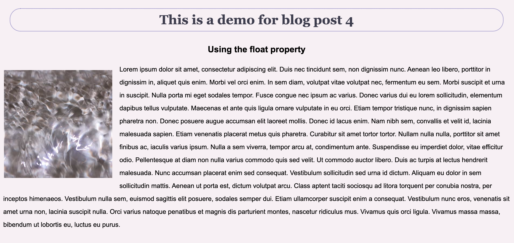

Properties in CSS
July 24th, 2023
When reviewing the chapters, I learned more about the various properties used in CSS as well as the different layout techniques for web design. We learned about flexbox and grid layout that can be used to add variations to content layout in class, and the chapters highlighted more details such as the order property, which allows designers to assign order to flex items to change their arrangements. Auto fill and auto fit are efficient tools that define rows and columns automatically based on the space given while grid areas give designers greater flexibility for content layout. The book was really informative and it discussed a lot of specific rules that can be used in CSS. Flexbox, grid layout, positioning and so on techniques give designers a lot of possibilities to effectively design a web page.
Another concept that I found interesting and helpful was using float and text wrap. Float moves an item on the page to the left or to the right and allows the content after it to wrap around the floating object. It provides a convenient way for designers to arrange the images and text while making the page look more balanced. The clear property was also introduced in the book which removes the float property to items that do not need to be wrapped. For text wrap, designers can define a shape or path around the object that can be used for the text around it to wrap around. Using properties such as circle() and ellipse() helps us to achieve such desired effects.
For the demo file, I experimented with float and border properties to help lay out the information on the page. Border style was utilized on the header while the paragraph text was wrapped around the image.